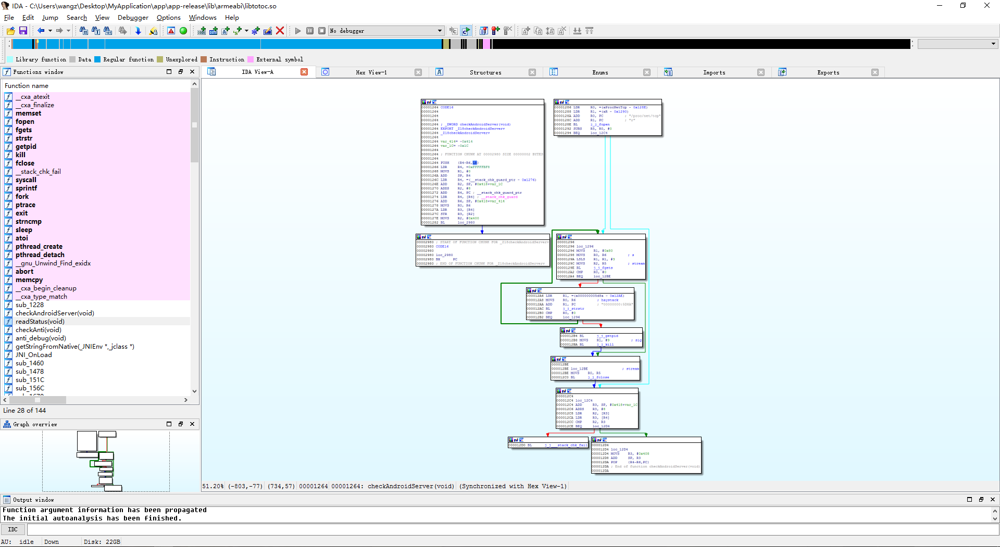
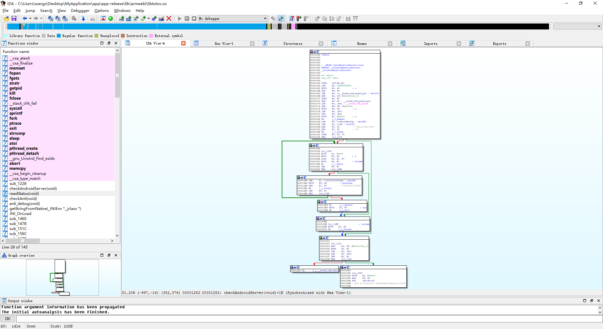

Author：wnagzihxain
Mail：tudouboom@163.com
当我们在使用IDA调试安卓应用的时候，需要先把android_server传到手机里，运行起来后会默认监听23946端口
在PC上开启端口转发，这时候我们才能使用IDA挂接上应用
那么我们就可以通过检测/proc/net/tcp文件里是否有00000000:5D8A，0x5D8A的十进制就是23946
root@jflte:/ # cat /proc/net/tcp
sl local_address rem_address st tx_queue rx_queue tr tm->when retrnsmt uid timeout inode
0: 0100007F:13AD 00000000:0000 0A 00000000:00000000 00:00000000 00000000 0 0 4656 1 00000000 100 0 0 10 -1
运行android_server
root@jflte:/data/local # ./android_server
IDA Android 32-bit remote debug server(ST) v1.19. Hex-Rays (c) 2004-2015
Listening on port #23946...
查看/proc/net/tcp文件，可以看到多了00000000:5D8A
root@jflte:/ # cat /proc/net/tcp
sl local_address rem_address st tx_queue rx_queue tr tm->when retrnsmt uid timeout inode
0: 00000000:5D8A 00000000:0000 0A 00000000:00000000 00:00000000 00000000 0 0 36501 1 00000000 100 0 0 10 -1
1: 0100007F:13AD 00000000:0000 0A 00000000:00000000 00:00000000 00000000 0 0 4656 1 00000000 100 0 0 10 -1
我们关掉android_server，重新开启，监听1995端口，注意-p参数是指port，和后面的端口数字之间没有空格
root@jflte:/data/local # ./android_server -p1995
IDA Android 32-bit remote debug server(ST) v1.19. Hex-Rays (c) 2004-2015
Listening on port #1995...
查看/proc/net/tcp文件，可以看到00000000:5D8A变成了00000000:07CB，07CB的十进制是1995
root@jflte:/ # cat /proc/net/tcp
sl local_address rem_address st tx_queue rx_queue tr tm->when retrnsmt uid timeout inode
0: 00000000:07CB 00000000:0000 0A 00000000:00000000 00:00000000 00000000 0 0 42557 1 00000000 100 0 0 10 -1
1: 0100007F:13AD 00000000:0000 0A 00000000:00000000 00:00000000 00000000 0 0 4656 1 00000000 100 0 0 10 -1
使用TracerPid反调试实现与逆向中的工程，添加一个检测的函数，并在子进程中循环调用，节奏跟着检测TracerPid，10秒一次，把TracerPid反调试的kill命令注释掉，我们这里在子进程中进行测试
//
// Created by wnagzihxain on 2016/12/25 0025.
//
#include "antidebug.h"
#define NULL 0
#define CHECK_TIME 10
#define LOGI(...) __android_log_print(ANDROID_LOG_INFO, "totoc", __VA_ARGS__)
#define LOGE(...) __android_log_print(ANDROID_LOG_ERROR, "totoc", __VA_ARGS__)
pthread_t id_anti_debug = NULL;
void checkAndroidServer() {
char szLines[1024] = {0};
FILE *fp = fopen("/proc/net/tcp", "r");
if(fp != NULL) {
while (fgets(szLines, sizeof(szLines), fp)) {
if (strstr(szLines, "00000000:5D8A")) {
kill(getpid(), SIGKILL);
break;
}
}
fclose(fp);
}
LOGI("There is no android_server");
}
void readStatus() {
FILE *fd;
char filename[128];
char line[128];
pid_t pid = syscall(__NR_getpid);
//LOGI("PID : %d", pid);
sprintf(filename, "/proc/%d/status", pid);//读取/proc/pid/status中的TracerPid
if (fork() == 0) {
int pt = ptrace(PTRACE_TRACEME, 0, 0, 0); //子进程反调试
if (pt == -1)
exit(0);
while (1) {
checkAndroidServer();
fd = fopen(filename, "r");
while (fgets(line, 128, fd)) {
if (strncmp(line, "TracerPid", 9) == 0) {
int status = atoi(&line[10]);
//LOGI("########## status = %d, %s", status, line);
fclose(fd);
syscall(__NR_close, fd);
if (status != 0) {
//LOGI("########## FBI WARNING ##########");
//LOGI("######### FIND DEBUGGER #########");
//kill(pid, SIGKILL);
//return;
}
break;
}
}
sleep(CHECK_TIME);
}
} else {
//LOGE("fork error");
}
}
void checkAnti() {
//LOGI("Call readStatus...");
readStatus();
}
void anti_debug() {
//LOGI("Call anti_debug...");
if (pthread_create(&id_anti_debug, NULL, (void *(*)(void *)) &checkAnti, NULL) != 0) {
//LOGE("Failed to create a debug checking thread!");
exit(-1);
};
pthread_detach(id_anti_debug);
}
运行起来，再次确定/proc/net/tcp文件
root@jflte:/ # cat /proc/net/tcp
sl local_address rem_address st tx_queue rx_queue tr tm->when retrnsmt uid timeout inode
0: 0100007F:13AD 00000000:0000 0A 00000000:00000000 00:00000000 00000000 0 0 4656 1 00000000 100 0 0 10 -1
运行android_server
root@jflte:/data/local # ./android_server
IDA Android 32-bit remote debug server(ST) v1.19. Hex-Rays (c) 2004-2015
Listening on port #23946...
查看/proc/net/tcp文件，确定有00000000:5D8A字符串
root@jflte:/ # cat /proc/net/tcp
sl local_address rem_address st tx_queue rx_queue tr tm->when retrnsmt uid timeout inode
0: 00000000:5D8A 00000000:0000 0A 00000000:00000000 00:00000000 00000000 0 0 71246 1 00000000 100 0 0 10 -1
1: 0100007F:13AD 00000000:0000 0A 00000000:00000000 00:00000000 00000000 0 0 4656 1 00000000 100 0 0 10 -1
使用过ps命令查看进程，发现只剩一个进程
root@jflte:/ # ps |grep "wnagzihxain"
u0_a124 11963 280 943496 32280 ffffffff 400688e0 S com.wnagzihxain.myapplication
因为我们在子进程中使用反调试，kill的时候获取的是子进程的PID，我们刚才使用ps命令只看到了一个进程，而那个进程现在看来是父进程，父进程是不参与反调试的，也就是说我们运行android_server后，承担反调试任务的子进程因为一个理论上恒成立的条件被kill掉，我们可以使用IDA attach上应用
为了验证，我们使用IDA attach应用
确实能成功attach
注释掉所有的LogCat，恢复TracerPid反调试分支里kill命令，编译签名
我们在逻辑调用图中看到了多了一个BL调用分支

双击进入

遇到了我们在之前分析时的问题，怎么修复在上面已经详细的讲过了，这里留给大家自己去研究一下
修复完是这样的

我们在前面讲的变量相关的技巧，这里可以实践一下，s目测是一个数组，0x414减去0x1C为1016字节，奇怪，我们明明定义的是1024个字节，这里难道是编译器优化什么的导致空间减少了吗？带着这个疑问，我们继续分析
.text:00001264 s= -0x414
.text:00001264 var_1C= -0x1C
.text:00001264
将R4，R5，R6，LR三个寄存器的值压栈保存
.text:00001264 PUSH {R4-R6,LR}
将0xFFFFFBF8这个地址赋值给R4：R4 = 0xFFFFFBF8
.text:00001266 LDR R4, =0xFFFFFBF8
将0赋值给R1：R1 = 0x0
.text:00001268 MOVS R1, #0 ; c
将R4加上SP赋值给SP：SP = SP + R4
.text:0000126A ADD SP, R4
定位__stack_chk_guard_ptr，安全机制
.text:0000126C LDR R4, =(__stack_chk_guard_ptr - 0x1276)
定位var_1C变量
.text:0000126E ADD R2, SP, #0x418+var_1C
R2是var_1C变量在栈空间的地址，这个地址加8，相当于往下移两个4字节单位，也就是说给上面那个变量空出8字节空间，再结合我们刚才说的s只有1016个字节，加上这8个字节刚好是1024个字节，这里就解释清楚了
.text:00001270 ADDS R2, #8
安全机制，再多说一句，这个_ptr后缀是指__stack_chk_guard的指针
.text:00001272 ADD R4, PC ; __stack_chk_guard_ptr
安全机制
.text:00001274 LDR R4, [R4] ; __stack_chk_guard
将SP + 0x418 + s的值赋值给R6：R6 = s
.text:00001276 ADD R6, SP, #0x418+s
将R6的值赋值给R0：R0 = R6 = s
.text:00001278 MOVS R0, R6 ; s
R4此时的值为__stack_chk_guard_ptr的指针：R3 = *__stack_chk_guard_ptr
.text:0000127A LDR R3, [R4]
将R3也就是*__stack_chk_guard_ptr存储到R2存储的地址，也就是SP + 0x418+var_1C + 8，关键是var_1C + 8
.text:0000127C STR R3, [R2]
0x400的十进制是1024，赋值给R2：R2 = 0x400
.text:0000127E MOVS R2, #0x400 ; n
调用memset()函数，R0此时是s，R1是0，R2是0x400，也就是初始化s数组：memset(s, 0, 0x400)
.text:00001282 BL j_j_memset
重定位aProcNetTcp
.text:00001286 LDR R0, =(aProcNetTcp - 0x128E)
重定位aR
.text:00001288 LDR R1, =(aR - 0x1290)
重定位完成：R0 = "/proc/net/tcp"
.text:0000128A ADD R0, PC ; "/proc/net/tcp"
重定位完成：R1 = "r"
.text:0000128C ADD R1, PC ; "r"
调用fopen()函数，R0位"/proc/net/tcp"，R1为"r"，还原一下：fopen("/proc/net/tcp", "r")
.text:0000128E BL j_j_fopen
将返回值R0减去0存储在R5：R5 = R0 - 0
.text:00001292 SUBS R5, R0, #0
根据结果跳转
.text:00001294 BEQ loc_12C4
如果返回的fp指针为空，直接跳到最后，不做任何操作结束函数
.text:000012C4 loc_12C4
.text:000012C4 ADD R3, SP, #0x418+var_1C
.text:000012C6 ADDS R3, #8
.text:000012C8 LDR R2, [R3]
.text:000012CA LDR R3, [R4]
.text:000012CC CMP R2, R3
.text:000012CE BEQ loc_12D4
打开成功后会进入一个循环
将0x80赋值给R1,0x80十进制是128
.text:00001296 loc_1296
.text:00001296 MOVS R1, #0x80
R6此时是s的首地址，将其赋值给R0：R0 = R6 = s
.text:00001298 MOVS R0, R6 ; s
将R1二进制左移三位:R1 = R1 * 2 * 2 * 2，结果是：R1 = 1024
.text:0000129A LSLS R1, R1, #3
将R5赋值给R2，R5此时是FILE *类型的变量，类似R2 = R5 = (FILE *)fp
.text:0000129C MOVS R2, R5 ; stream
调用fgets()函数，还原一下：fgets(s, 1024, fp)
.text:0000129E BL j_j_fgets
读取结果是否为空，为空说明读取到最后
.text:000012A2 CMP R0, #0
读取到最后则跳出
.text:000012A4 BEQ loc_12BE
跳到loc_12BE，调用fclose()函数关闭fp
.text:000012BE loc_12BE ; stream
.text:000012BE MOVS R0, R5
.text:000012C0 BL j_j_fclose
然后正常退出本次反调试
如果读取到的数据不为空，则进入判断分支
定位a000000005d8a
.text:000012A6 LDR R1, =(a000000005d8a - 0x12AE)
将R6赋值给R0，此时R6为s的首地址，也就是读取到的数据存储的栈空间首地址
.text:000012A8 MOVS R0, R6 ; haystack
重定位完成：R1 = "00000000:5D8A"
.text:000012AA ADD R1, PC ; "00000000:5D8A"
调用strstr()函数，判断R1是否为R0的子字符串，也就是判断"00000000:5D8A"是否在读取的数据里
.text:000012AC BL j_j_strstr
对比返回结果
.text:000012B0 CMP R0, #0
根据结果跳转
.text:000012B2 BEQ loc_1296
如果判断出"00000000:5D8A"在读取的子字符串里，跳到kill分支
先调用getpid()获取本进程PID
.text:000012B4 BL j_j_getpid
调用kill()函数kill掉自己
.text:000012B8 MOVS R1, #9 ; sig
.text:000012BA BL j_j_kill
上面有提到过，这样只会kill掉子进程，相当于自己去掉了目前为止所有的反调试措施，那么如何在子进程中进行反调试，同时能kill掉父进程呢？
留一个小小的思考，有兴趣的同学可以实践一下